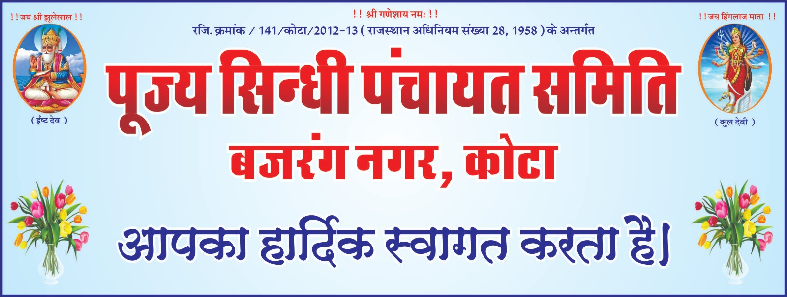

.jpeg)

.jpeg)
विश्व की प्राचीनतम सभ्यता सिन्धु नदी घाटी के किनारे स्थित हड़प्पा और मोहन जोदड़ो के हम वारिसों के लिए यह फख की बात है कि पूर्णतया लोकतंत्र आधारित पंचायत प्रणाली का प्रारंभ करने का श्रेय हमें जाता है। सिन्धी समुदाय ने सैकड़ों-हजारों वर्ष पूर्व पंचायत प्रणाली के महत्व और लाभों को समझा और उसे आज तक बरक़रार रखा। इसी कड़ी में आज यह उल्लेखनीय है कि देश-प्रदेश में जहाँ भी सिन्धी है वहाँ उसने पंचायत नामक संस्था को जीवित रखा है। अपनी पहचान को सुदृढ़ करने,
View More
From the Desk of ...
PRESIDENT

C P Khetani
Advocate
|| मेरा समाज ही मेरा अभिमान ||
सम्मानीय सिन्धुजन,
हम चिर प्राचीन सिंधु सभ्यता के वारिस हे। यह हमारा परम कर्त्तव्य हे कि हम सिंधु सभ्यता-संस्कृति, सिन्धी भाषा-साहित्य, सिन्धी वेशभूषा-परिवेश, सिन्धी तीज-त्यौहार, सिन्धी खान-पान को जीवंत रखकर अपने सिन्धी होने पर गर्व की अनुभूति करें।
। आओ साथ चलें ।
मुझको सिन्धी होने पर गर्व है
सम्मानीय सिन्धुजन,
हम चिर प्राचीन सिंधु सभ्यता के वारिस हे। यह हमारा परम कर्त्तव्य हे कि हम सिंधु सभ्यता-संस्कृति, सिन्धी भाषा-साहित्य, सिन्धी वेशभूषा-परिवेश, सिन्धी तीज-त्यौहार, सिन्धी खान-पान को जीवंत रखकर अपने सिन्धी होने पर गर्व की अनुभूति करें।
। आओ साथ चलें ।
मुझको सिन्धी होने पर गर्व है
Activities
पूज्य सिन्धी पंचायत समिति, बजरंग नगर , कोटा द्वारा बहुप्रतिक्षित ऑनलाइन पोर्टल्स की भी शुरुआत की गयी है जिनका उद्देश्य समाज को तकनीकी माध्यम से एकीकृत करना है।
सदस्य्ता आवेदन पोर्टल : इसका उद्देश्य संस्था का डिजिटल डाटा बैंक बनाना है जिससे समाज के सभी लोग जुड़े हो जिसका उपयोग समाज के विकास के विभिन्न पहलुओं के लिए किया जा सके।
वैवाहिक सेवा पोर्टल : इसके माध्यम से सिंधुजन अपने विवाह योग्य युवक युवतियों के बायोडाटा बना सकते है तथा अपनी आवश्यकता के अनुसार रिश्ते भी खोज सकते है।
रोजगार सेवा पोर्टल : इसका उद्देश्य समाज के युवाओ को एक प्लेटफार्म उपलब्ध करना है जहा पर अपनी अनुकूल जॉब सर्च कर सकते है।
पूज्य सिन्धी सेन्ट्रल पंचायत जयपुर महानगर की बहुउद्देशीय वेबसाइट प्रारम्भ की गई है जिसके माध्यम से आप सभी:
- संस्था से डिजिटली जुड़ सकते है
- संस्था की आगामी गतिविधियों, कार्यकर्मो, उत्सवों की जानकारी प्राप्त कर सकते है
- संस्था के विषय में अद्यतन समाचार प्राप्त कर सकते है
- संस्था द्वारा किये जाने वाले विभिन्न कार्यक्रमों को ऑनलाइन एवं लाइव देख सकते है जो की रिकार्डेड फॉर्मेट में भी वेबसाइट पर उपलब्ध रहेंगे
- संस्था की उपलब्धियो के बारे में जान संकेगे
- संस्था की विभिन्न सामाजिक एवं धार्मिक गतिविधियों का विवरण प्राप्त कर संकेगे
Bank Account Details
PUJYA SINDHI PANCHAYAT
Bank Name : CANARA Bank
Bank Branch : SUBJIMANDHI, KOTA
SB Account No. : 84102010004108
IFS Code : CNRB0018410